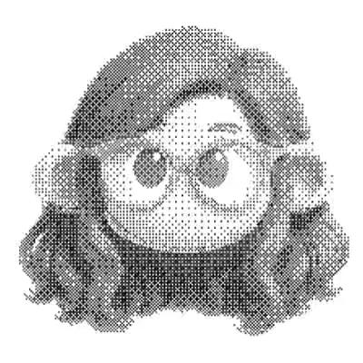

Info
Designer with 6+ years experience in multiple design fields.
She collaborates with artists, independent spaces, and community-driven projects: residencies, publications, food ventures, podcasts, whatever has a point of view worth shaping.
Multidisciplinary, detail-obsessed, and emotionally invested in typography.
Available for collaborations.
Skills: Illustrator, InDesign, Photoshop, Figma, After Effects, Codex, Claude, Midjourney